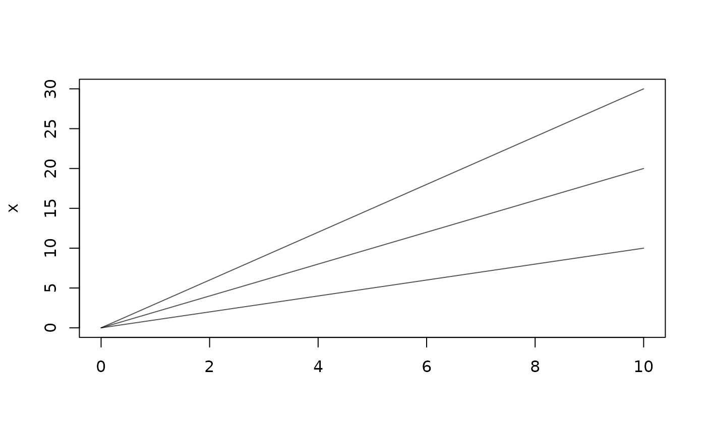

These functions access, subset, replace and evaluate tf objects.
For more information on creating tf objects and converting them to/from
list, data.frame or matrix, see tfd() and tfb(). See Details.
Usage
# S3 method for tf
[(x, i, j, interpolate = TRUE, matrix = TRUE)
# S3 method for tf
[(x, i) <- valueArguments
- x
an
tf- i
index of the observations (
integerish,characterorlogical, usual R rules apply)- j
The
argused to evaluate the functions. A (list of)numericvectors. NOT interpreted as a column number but as the argument value of the respective functional datum.- interpolate
should functions be evaluated (i.e., inter-/extrapolated) for values in
argfor which no original data is available? Only relevant for the raw data classtfd, for which it defaults toTRUE. Basis-representedtfbare always "interpolated".- matrix
should the result be returned as a
matrixor as a list ofdata.frames? IfTRUE,jhas to be a (list of a) single vector ofarg. See return value.- value
tfobject for subassignment. This is typed more strictly than concatenation: subassignment only happens if the common type ofvalueandxis the same as the type ofx, so subassignment never changes the type ofxbut may do a potentially lossy cast ofvalueto the type ofx(with a warning).
Value
If j is missing, a subset of the functions in x as given by
i.
If j is given and matrix == TRUE, a numeric matrix of function
evaluations in which each row represents one function and each column
represents one argval as given in argument j, with an attribute
arg=j and row- and column-names derived from x[i] and j.
If
j is given and matrix == FALSE, a list of tbl_dfs with columns
arg = j and value = evaluations at j for each observation in
i.
Details
Note that these break certain (terrible) R conventions for vector-like objects:
no argument recycling,
no indexing with
NA,no indexing with names not present in
x,no indexing with integers
> length(x)
All of the above will trigger errors.
Examples
x <- 1:3 * tfd(data = 0:10, arg = 0:10)
plot(x)

# this operator's 2nd argument is quite overloaded -- you can:
# 1. simply extract elements from the vector if no second arg is given:
x[1]
#> tfd[1] on (0,10) based on 11 evaluations each
#> interpolation by tf_approx_linear
#> [1]: (0,0);(1,1);(2,2); ...
x[c(TRUE, FALSE, FALSE)]
#> tfd[1] on (0,10) based on 11 evaluations each
#> interpolation by tf_approx_linear
#> [1]: (0,0);(1,1);(2,2); ...
x[-(2:3)]
#> tfd[1] on (0,10) based on 11 evaluations each
#> interpolation by tf_approx_linear
#> [1]: (0,0);(1,1);(2,2); ...
# 2. use the second argument and optional additional arguments to
# extract specific function evaluations in a number of formats:
x[1:2, c(4.5, 9)] # returns a matrix of function evaluations
#> 4.5 9
#> [1,] 4.5 9
#> [2,] 9.0 18
#> attr(,"arg")
#> [1] 4.5 9.0
x[1:2, c(4.5, 9), interpolate = FALSE] # NA for arg-values not in the original data
#> Warning: interpolate = FALSE & no evaluations for some <j>: NAs created.
#> 4.5 9
#> [1,] NA 9
#> [2,] NA 18
#> attr(,"arg")
#> [1] 4.5 9.0
x[-3, seq(1, 9, by = 2), matrix = FALSE] # list of data.frames for each function
#> [[1]]
#> arg value
#> 1 1 1
#> 2 3 3
#> 3 5 5
#> 4 7 7
#> 5 9 9
#>
#> [[2]]
#> arg value
#> 1 1 2
#> 2 3 6
#> 3 5 10
#> 4 7 14
#> 5 9 18
#>
# in order to evaluate a set of observed functions on a new grid and
# save them as a functional data vector again, use `tfd` or `tfb` instead:
tfd(x, arg = seq(0, 10, by = 0.01))
#> tfd[3] on (0,10) based on 1001 evaluations each
#> interpolation by tf_approx_linear
#> [1]: (0.00,0.00);(0.01,0.01);(0.02,0.02); ...
#> [2]: (0.00,0.00);(0.01,0.02);(0.02,0.04); ...
#> [3]: (0.00,0.00);(0.01,0.03);(0.02,0.06); ...